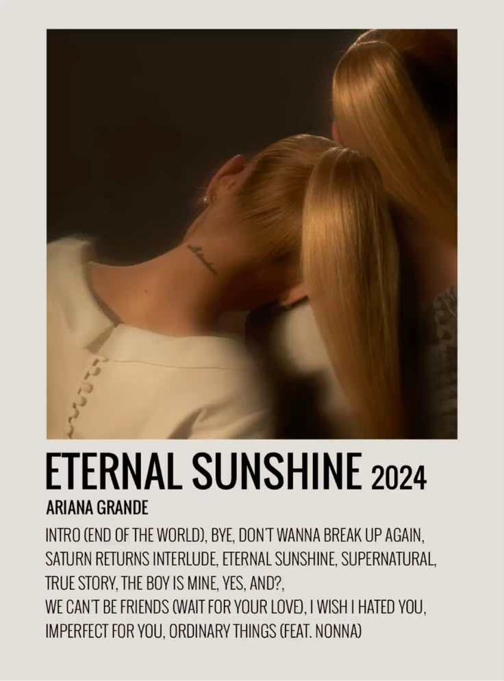
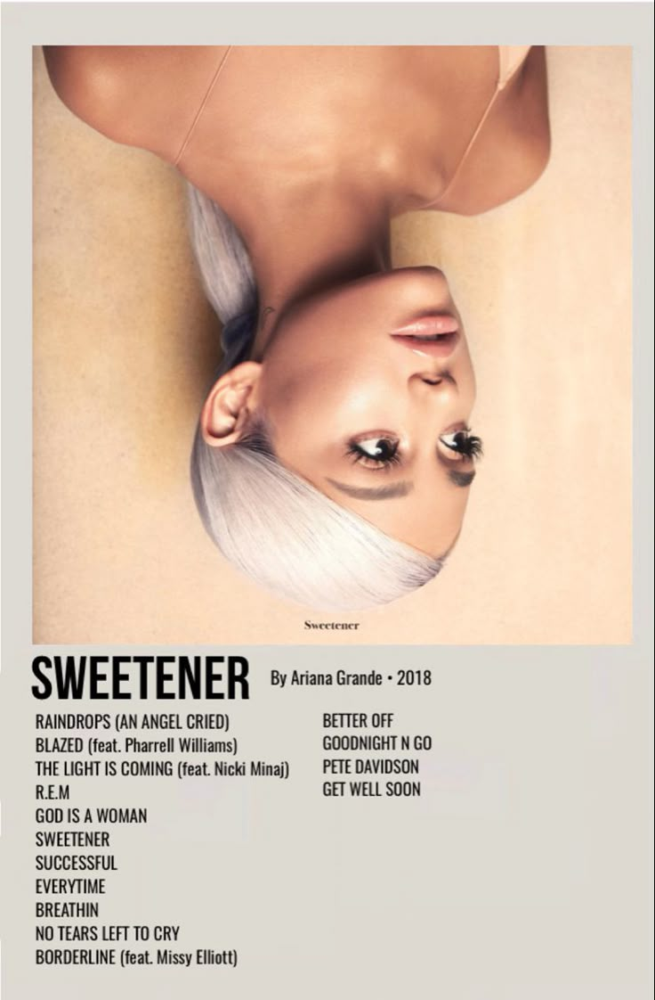
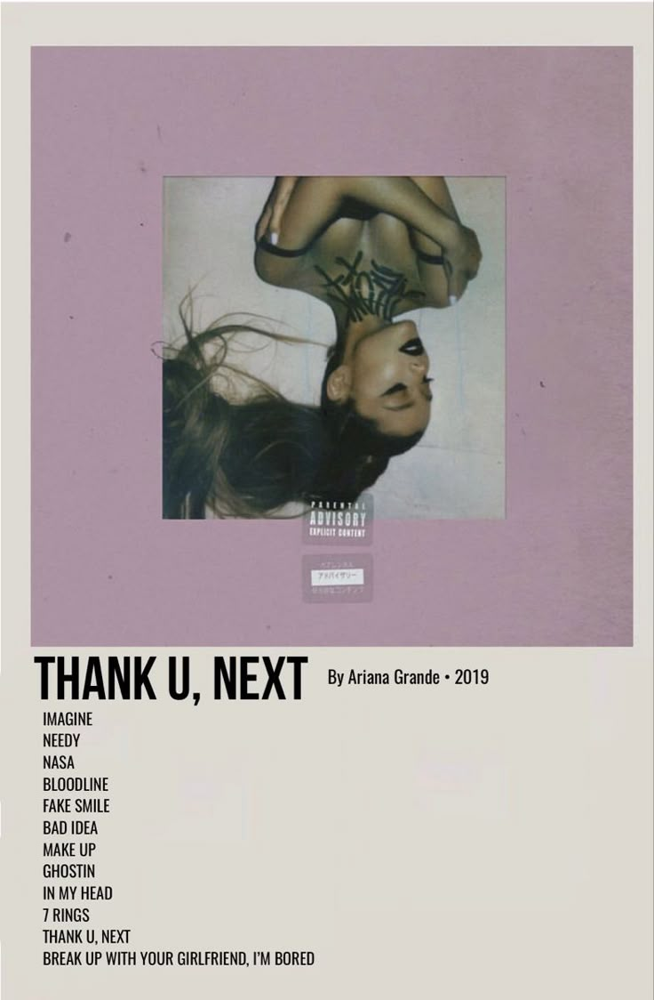

Ariana Grande
🎧˖ . ݁𝜗𝜚. ݁₊
Background:
Ariana Grande-Butera was born on June 26, 1993, in Boca Raton, Florida.
As a young child, Ariana performed with the Fort Lauderdale Children's Theater, playing her first role as the title character in the musical Annie.
She also performed in their productions of The Wizard of Oz and Beauty and the Beast. At age eight, she performed at a karaoke lounge on a cruise ship and with orchestras such as South Florida's Philharmonic, Florida Sunshine Pops and Symphonic Orchestras.
During this time, she attended the Pine Crest School and later North Broward Preparatory.
Music & Career:
2013-2015: Yours Truly and My Everything
Ariana launched her music career with her debut album Yours Truly,
which debuted at #1 on the Billboard 200 and it included the hit single "The Way".
2016-2020: Other Albums
She followed this success with several other albums including, My Everything (2014),
Dangerous Woman (2016), Sweetener (2018), Thank U, Next(2019), and Positions (2020).
Musical Style & Influence:
Ariana mixes a blend of pop and R&B elements into her music, and is known for her impressive vocal abilities, often drawing comparisons to Mariah Carey.
She has received numerous awards throughout her career, including Grammy Awards and American Music Awards.
She is also recognized as on of the most influencial figures in the music industry, with multiple chart-topping albums.
Other:
In 2024, Ariana Grande starred as Glinda in the film adaptation of the popular broadway musical, Wicked.
This role showcased her versatility as both a singer an an actress.

.jpg)


More Info:
Ariana Grande
Ariana Grande Shop